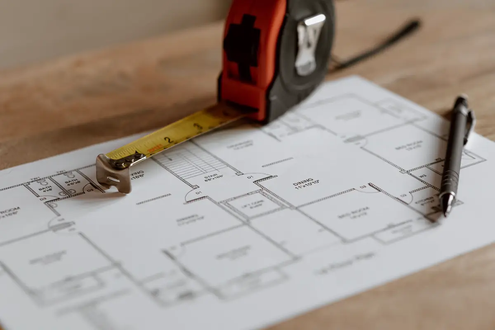
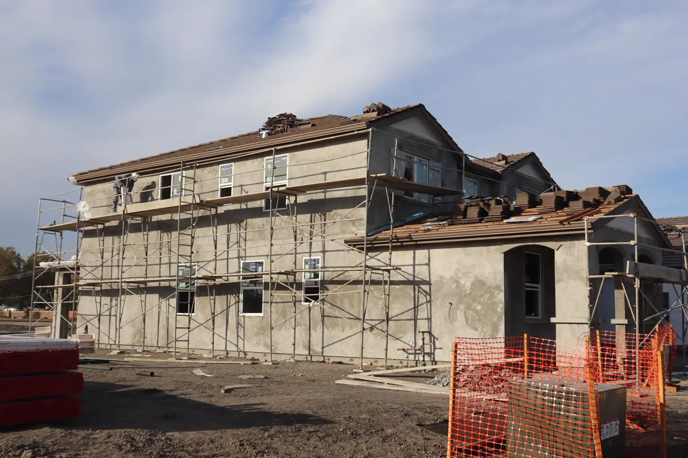

Quando o imóvel precisa ser regularizado
O problema costuma aparecer na hora de vender, financiar, fazer inventário ou pedir alvará para um comércio: o que está construído não bate com o que está aprovado e averbado. Ampliação nos fundos, segundo pavimento, garagem coberta, sala comercial na frente da casa — tudo o que foi feito sem projeto aprovado fica fora da matrícula, e o banco não financia o que não existe no papel.
A regularização junta três frentes: levantamento do que existe, documento técnico com responsável e ART, e o processo na prefeitura até a certidão ou o habite-se, que depois é levado ao cartório para averbar a construção.
Equipe técnica pronta para atender toda a demanda em Vitória, Vila Velha, Serra, Cariacica e região: o orçamento, o agendamento e o acompanhamento ficam centralizados na Axial Engenharia, do primeiro contato à entrega do documento.

Programas de regularização na Grande Vitória
Cada município tem regra própria. As leis abaixo são as que estruturam a regularização de edificações hoje; condições, prazos de corte e contrapartida mudam por lei, e o enquadramento do seu imóvel é conferido antes do protocolo.
| Município | Norma | O que costuma ser exigido |
|---|---|---|
| Vila Velha | Lei 6.207/2019 (Programa de Regularização de Edificações) e Código de Edificações, LC 46/2016 | Projeto de regularização completo e ART ou RRT de profissional habilitado |
| Cariacica | Lei 6.635/2024 | Levantamento arquitetônico, laudo de salubridade, habitabilidade e estabilidade e, quando preciso, levantamento topográfico — todos com ART, RRT ou TRT |
| Serra | Lei 5.911/2023 | Regularização de edificações com documentação técnica e responsável |
| Viana | Lei 2.747/2015 | Programa de Regularização de Edificações |
| Vitória | Lei 8.859/2015 | Programa voltado a obras concluídas até 31/12/2011; obra mais recente segue o licenciamento comum |
Regularização fundiária (Reurb), em que o próprio lote não tem matrícula regular, segue outro rito — municipal e coletivo — e não se confunde com a regularização da construção.

Etapas da regularização
- Análise dos documentos. Matrícula, IPTU, projeto aprovado (se existir) e fotos. Aqui se define o enquadramento na lei do município.
- Levantamento do imóvel. Medição do que está construído e, quando a divisa é duvidosa, levantamento topográfico.
- Documento técnico e ART. Projeto de regularização e laudo de estabilidade e habitabilidade, com responsável técnico.
- Protocolo e averbação. Acompanhamento das exigências da prefeitura até a certidão ou o habite-se, e apoio para averbar no cartório.

O laudo de estabilidade é a parte técnica que mais trava
Construção feita sem projeto pode ter fissuras, armadura exposta, laje com flecha ou infiltração que comprometa a estrutura. O laudo precisa afirmar, com vistoria e responsabilidade técnica, que a edificação é estável e habitável — ou indicar o reparo antes. Quando aparecem trincas, o diagnóstico segue o mesmo método das patologias estruturais; quando a construção é metálica, entra a avaliação da estrutura metálica.
Para imóvel comercial, a regularização da construção costuma vir junto com o alvará do Corpo de Bombeiros e com o laudo de acessibilidade para alvará.
Perguntas frequentes sobre regularização de imóvel
Dá para financiar imóvel sem habite-se?
Em geral, não. O banco avalia o imóvel pelo que consta na matrícula; área construída sem averbação não entra na avaliação e costuma impedir o financiamento. A regularização e a averbação resolvem isso.
Qual a diferença entre habite-se e averbação?
O habite-se, ou certificado de conclusão, é emitido pela prefeitura e atesta que a construção pode ser ocupada. A averbação é o registro dessa construção na matrícula, feito no cartório de registro de imóveis com base no documento da prefeitura.
Toda obra irregular pode ser regularizada?
Não. Construção sobre área de preservação, faixa não edificável, recuo obrigatório ou em risco geotécnico pode ser indeferida ou exigir demolição parcial. A análise prévia indica o enquadramento antes de qualquer custo com projeto.
Quem assina a regularização?
Engenheiro ou arquiteto habilitado, com ART no CREA-ES ou RRT no CAU. O profissional responde pelo levantamento, pelo projeto de regularização e pelo laudo de estabilidade e habitabilidade.
Quanto tempo demora regularizar um imóvel?
A parte técnica — levantamento, projeto e laudo — leva de duas a quatro semanas na maioria das casas. O prazo da prefeitura depende do município e das exigências, e é a etapa mais variável.
Regularização de imóvel na Grande Vitória
Documentação técnica para regularizar casas, sobrados e imóveis comerciais:
Vai vender, financiar ou fazer inventário?
Mande a matrícula e fotos da fachada. Dizemos o caminho da regularização no seu município.